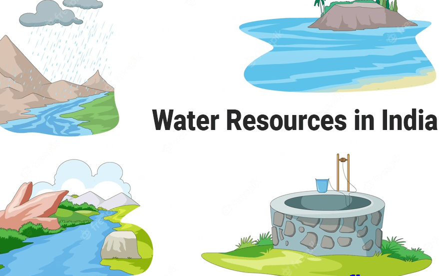
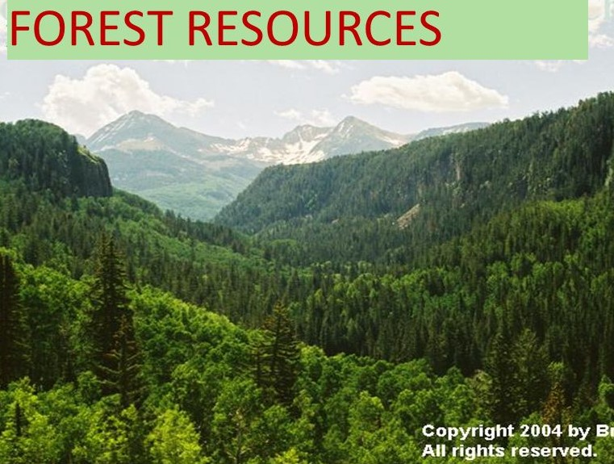
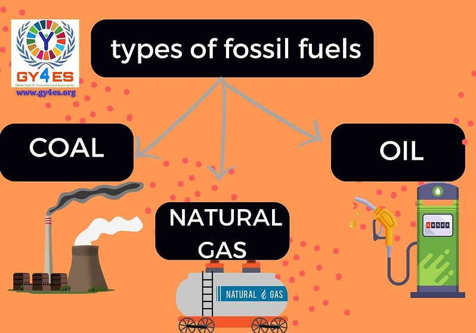
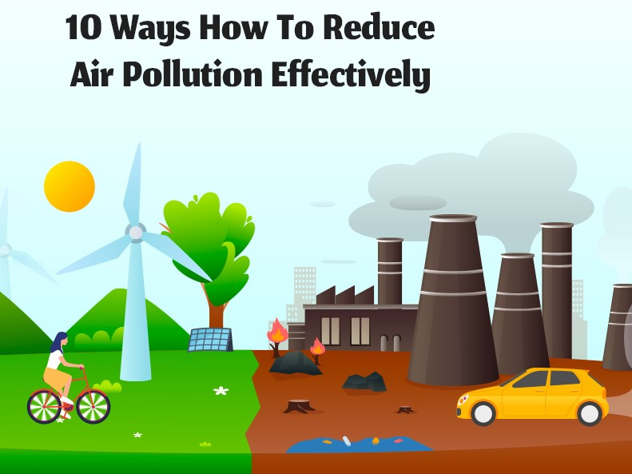
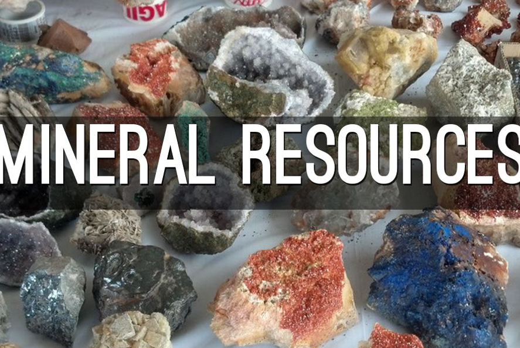
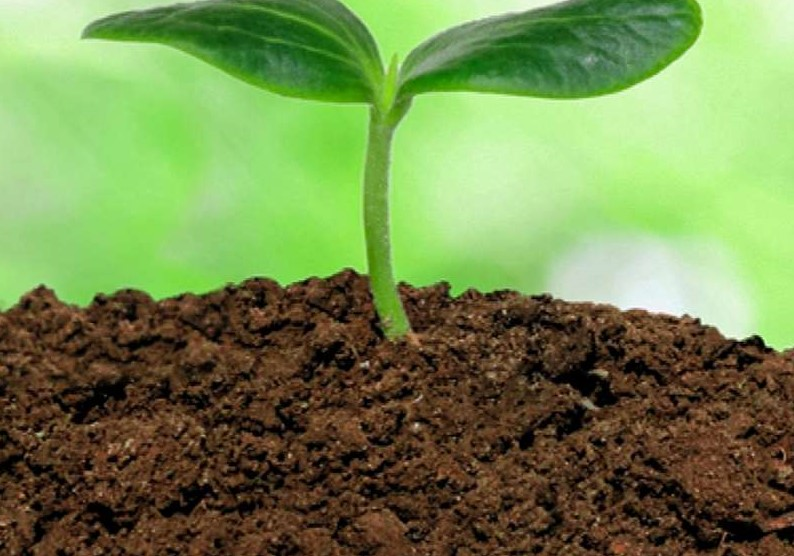

Resources on Earth
Water Resources
Water is one of Earth’s most essential natural resources. It is vital for all living organisms, including humans, animals, and plants. Around 71% of Earth’s surface is covered in water, but only about 3% is freshwater, and even less is easily accessible for drinking or irrigation. Water is used in everyday life for drinking, cooking, cleaning, farming, electricity generation (like in dams), and industry. Water exists in rivers, lakes, glaciers, underground aquifers, and the atmosphere. The water cycle—evaporation, condensation, precipitation, and collection—helps keep water moving through different parts of the environment. However, water resources are under pressure due to overuse, pollution, and climate change. Rivers and lakes are drying up, and groundwater is being depleted faster than it can be refilled. In some areas, people do not have access to clean and safe drinking water. To conserve water, we must avoid wastage, fix leaks, use rainwater harvesting, and treat wastewater for reuse. Protecting wetlands and forests also helps in water conservation. Water is life, and without it, no living thing can survive. Managing it wisely ensures health, food security, and future sustainability for everyone on Earth.
Forest Resources
Forests are one of Earth’s most valuable natural resources. They cover nearly 30% of the planet’s surface and provide countless benefits to life on Earth. Forests are home to over 80% of the world’s terrestrial biodiversity, including birds, animals, insects, and microorganisms. They give us oxygen, store carbon dioxide, prevent soil erosion, and regulate the climate. Forests also provide wood, fruits, nuts, rubber, herbs, and medicine. Many people depend directly on forests for their livelihood, especially in rural and tribal communities. Forests are categorized into types like tropical rainforests, temperate forests, and boreal forests, each supporting different life forms. Trees also help in maintaining the water cycle by attracting rain and replenishing groundwater. Unfortunately, forests are being destroyed at a rapid rate due to deforestation, agriculture, mining, and urbanization. Cutting down trees without replanting leads to loss of biodiversity, climate change, and flooding. To protect forest resources, we must support afforestation, reforestation, and sustainable logging. Governments and citizens need to work together to conserve existing forests and create awareness. Forests are not just tree collections—they are living ecosystems that support life on Earth.
Fossil Fuels
Fossil fuels are natural resources formed over millions of years from the remains of dead plants and animals buried under Earth's surface. The three main types of fossil fuels are coal, oil (petroleum), and natural gas. They are non-renewable, meaning once they are used up, they cannot be replaced in our lifetime. Fossil fuels are the world’s primary source of energy. They power vehicles, generate electricity, and fuel factories. Many everyday products—plastics, fertilizers, medicines—are made from petroleum. Fossil fuels have played a major role in industrial growth and global development. However, burning fossil fuels releases harmful gases like carbon dioxide, sulfur dioxide, and nitrogen oxides, which cause air pollution, acid rain, and global warming. They are the leading contributors to climate change and poor air quality. Over-dependence on fossil fuels is also risky because they are limited and mostly controlled by a few countries, which can lead to political conflicts and price increases. To reduce harm, we must shift to clean and renewable energy like solar, wind, and hydro. Using energy-efficient appliances, reducing fuel consumption, and supporting green technologies are important steps. Fossil fuels helped build modern life, but now it’s time to move toward a cleaner future.
Air
Air is a vital natural resource that surrounds our planet and supports all forms of life. The Earth’s atmosphere is a mixture of gases—primarily nitrogen (78%), oxygen (21%), and small amounts of carbon dioxide, argon, and water vapor. Oxygen is essential for the respiration of animals and humans, while plants use carbon dioxide during photosynthesis to produce food and release oxygen. Air also plays a key role in maintaining Earth's climate and weather patterns. It acts as a blanket, protecting the Earth from extreme temperatures and harmful solar radiation through the ozone layer. The movement of air causes winds, which help distribute heat and moisture around the globe. Clean air is necessary for health, but human activities like burning fossil fuels, industrial emissions, and deforestation have caused serious air pollution. This leads to problems such as smog, acid rain, asthma, lung diseases, and climate change. To protect air quality, we must reduce vehicle emissions, shift to clean energy sources, and plant more trees. Governments and individuals both play important roles in enforcing clean air laws. Breathing clean air is a right and necessity—preserving it is critical for both nature and human survival.
Mineral Resources
Minerals are naturally occurring solid substances found in the Earth’s crust. They are non-renewable resources that have formed over millions of years under high pressure and temperature. Minerals are the building blocks of many things we use daily, such as buildings, roads, vehicles, electronics, and jewelry. Common minerals include iron, copper, gold, silver, aluminum, limestone, salt, coal, and uranium. Minerals are extracted through mining, which includes processes like open-pit mining, underground mining, and quarrying. These materials are then refined and processed into useful products. For example, iron ore is used to make steel, bauxite becomes aluminum, and silicon is essential in making computer chips. Although minerals are valuable, mining can cause serious environmental problems such as soil erosion, water contamination, deforestation, and habitat destruction. Overuse and mismanagement of mineral resources can lead to depletion and conflicts over ownership. To ensure sustainable use, it is important to promote recycling, develop green mining technologies, and explore alternative materials. Minerals are limited, so using them responsibly is vital. They have helped advance technology and industry, but we must manage them carefully to preserve Earth's natural wealth for future generations.
Soil
Soil is one of the most essential and life-supporting resources on Earth. It forms the upper layer of the Earth’s crust and is made up of minerals, organic matter, water, air, and living organisms like worms, insects, and microbes. It takes thousands of years for a few centimeters of fertile soil to form. Soil is the foundation of agriculture, providing a medium for plants to grow. It supplies essential nutrients and helps retain water. Crops like wheat, rice, fruits, and vegetables all depend on healthy soil. Forests and grasslands also thrive because of soil, making it a vital part of the ecosystem. Soil supports construction, filters water, stores carbon, and helps control floods by absorbing rain. However, soil is being damaged by deforestation, overgrazing, chemical fertilizers, pesticides, and urbanization. This leads to problems like soil erosion, loss of fertility, and desertification. Protecting soil requires practices like organic farming, crop rotation, tree planting, and reducing chemical use. Soil conservation is crucial for ensuring food security and maintaining a stable environment. Healthy soil means healthy life—for plants, animals, and humans.
Sunlight

Sunlight is a natural and renewable resource that is fundamental to life on Earth. It provides energy in the form of solar radiation, which is used by plants to perform photosynthesis—the process by which they make food and release oxygen. This not only sustains plant life but also supports herbivores and carnivores through the food chain. Sunlight helps regulate Earth’s climate and weather by warming the land, oceans, and atmosphere. It also plays an essential role in the water cycle, causing evaporation and helping clouds form. For humans, sunlight is vital for vitamin D production, which keeps bones healthy. In modern times, sunlight is being harnessed as a clean and sustainable energy source. Solar panels convert sunlight into electricity for homes, schools, and industries. This helps reduce our dependence on fossil fuels and lowers pollution. However, overexposure to UV rays can cause health issues like skin cancer and eye damage. That’s why protecting the ozone layer, which filters harmful UV radiation, is essential. Sunlight is free, abundant, and eco-friendly. Promoting solar energy use and understanding its importance can help create a greener and more sustainable future for all.